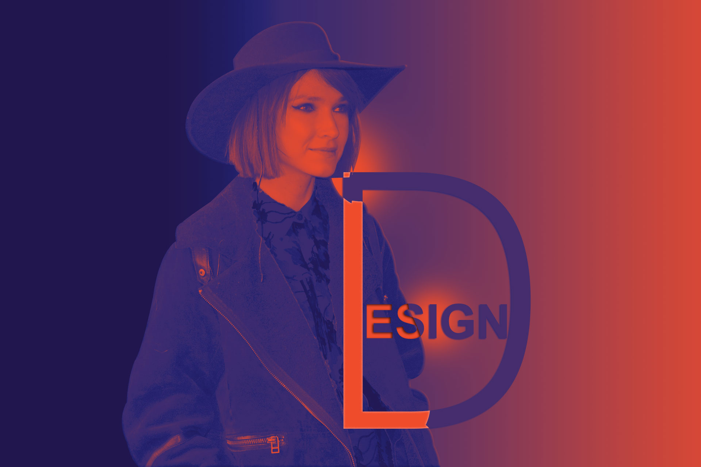

[그래픽_이중합성]
배경과 인물 이미지를 사용하여 이중 노출 효과를 만들었습니다.
모델의 헤어를 폭포로 합성한 부분과 어울리는 배경을 선택하여 흑백으로 표현하였습니다.
[그래픽_레이어마스크]
사막 / 오로라 배경 이미지와 인물을 오버레이하여 합성했습니다.
모델의 동작과 배경이 어울릴 수 있는 색상으로 표현하였습니다.
[그래픽_비합성]
노이즈와 필터를 사용하여 비가 내리는 느낌을 나타냈습니다.
우산을 쓰고있는 모델 뒷모습은 있지만 비의 분위기가 없어서 추가했습니다.
[그래픽_듀오톤]
문구와 인물로 듀오톤을 활용한 그래픽 입니다.
그라디언트로 좌우 구분하고 디자인 문구로 포인트를 주었습니다.